CB Prod · Mafra, Portugal
Peças fabricadas na nossa fábrica para os nossos clientes profissionais
Cada peça desta galeria foi fabricada na nossa fábrica de Igreja Nova a partir dos desenhos enviados por uma empresa de cozinhas, um marmorista, um arquiteto ou um decorador. Bancadas de cozinha, tampos de lavatório, mesas e balcões de bar: veja os nossos projetos para avaliar os acabamentos e preparar connosco as suas próximas obras.
O que fabricamos para as suas obras
A cozinha continua a ser a nossa produção mais frequente: bancadas, ilhas com cantos arredondados prolongadas em mesa, frentes de bancada cortadas na mesma chapa da bancada, laterais e topos revestidos a pedra. Para a casa de banho, fabricamos tampos de lavatório, lavatórios integrados e revestimentos de parede que formam um conjunto contínuo.
A galeria mostra também mesas, balcões de bares e restaurantes, uma lareira e uma secretária. Estas peças exigem uma atenção especial aos rebordos, às espessuras e às uniões, porque a superfície é vista e tocada a toda a hora.
Verá sobretudo mármore e quartzito, mas trabalhamos todas as nossas famílias de materiais com a mesma exigência: granito, quartzo, cerâmica, Corian®, Minéralis e pedra reciclada. Cada peça foi verificada em dimensões e acabamento antes da expedição.
Usar a galeria com os seus clientes
Filtre os projetos por tipo de divisão e leia a legenda de cada fotografia: indica o material e muitas vezes a cor. É um apoio simples para mostrar ao seu cliente um aspeto, um rebordo ou um recorte antes de fechar o projeto.
Quando nos enviar um pedido, junte as imagens de referência aos seus desenhos cotados. Percebemos mais depressa o resultado pretendido e podemos assinalar uma limitação técnica logo no estudo, antes de o orçamento chegar ao seu cliente.
Lembre também que uma pedra natural nunca é igual de uma chapa para outra. Para um mármore ou um quartzito com veios marcados, o mais seguro é vir escolher a chapa à fábrica de Igreja Nova, por marcação, sozinho ou com o seu cliente, antes de a fabricação arrancar.
Cozinhas
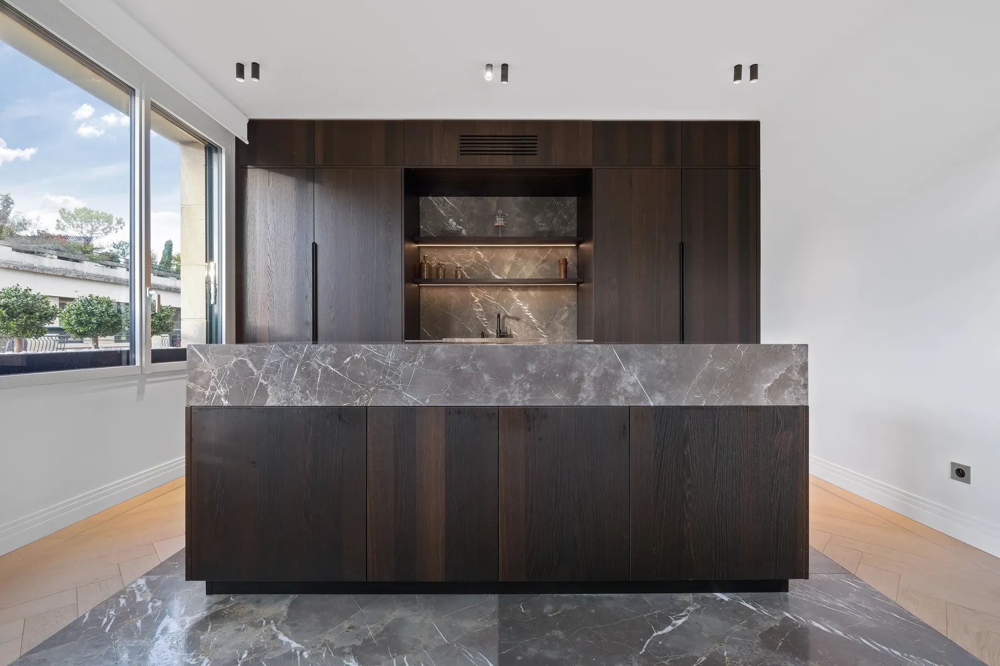
Mármore Fior di BoscoIlha monolítica, frente em nicho e chão em mármore a condizer 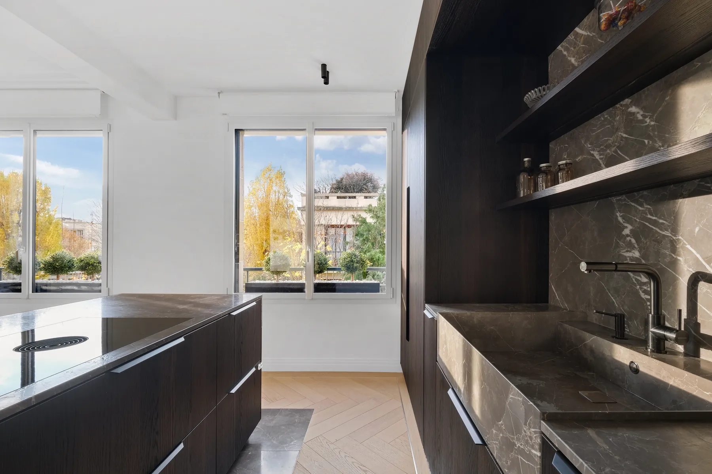
Mármore Fior di BoscoLava-loiça talhado no bloco, bancada e frente a condizer 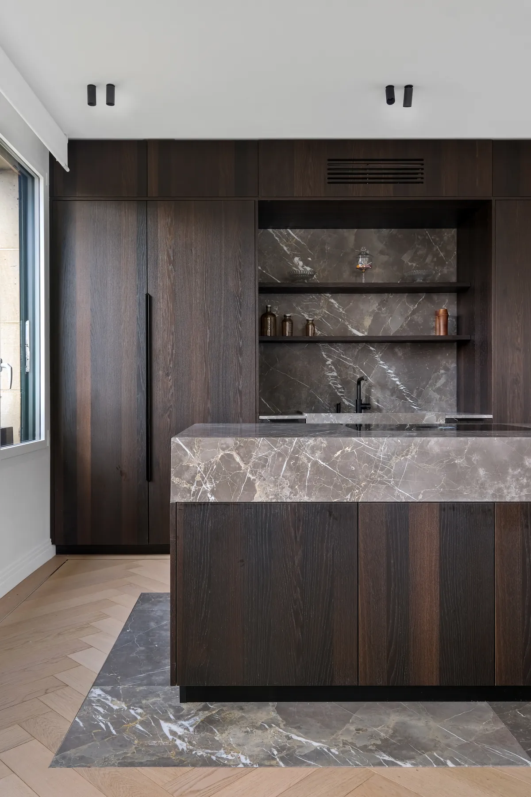
Mármore Fior di BoscoIlha de bordo espesso e nicho revestido a mármore 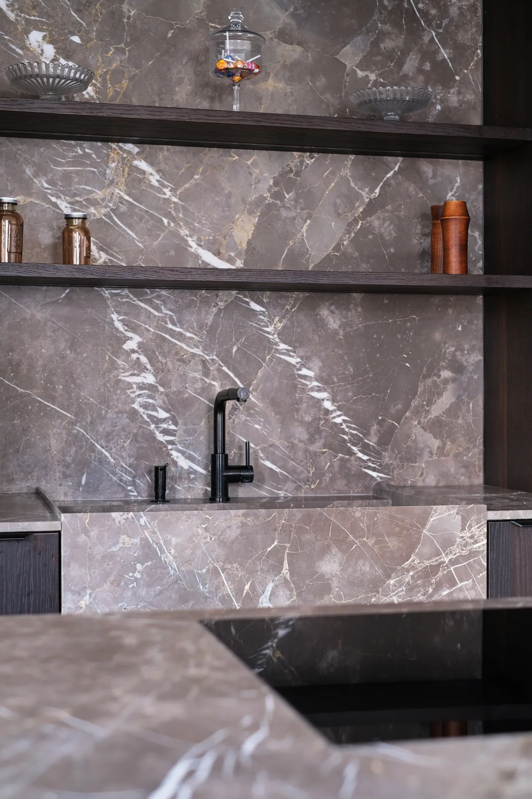
Mármore Fior di BoscoLava-loiça esculpido e frente em mármore numa só peça 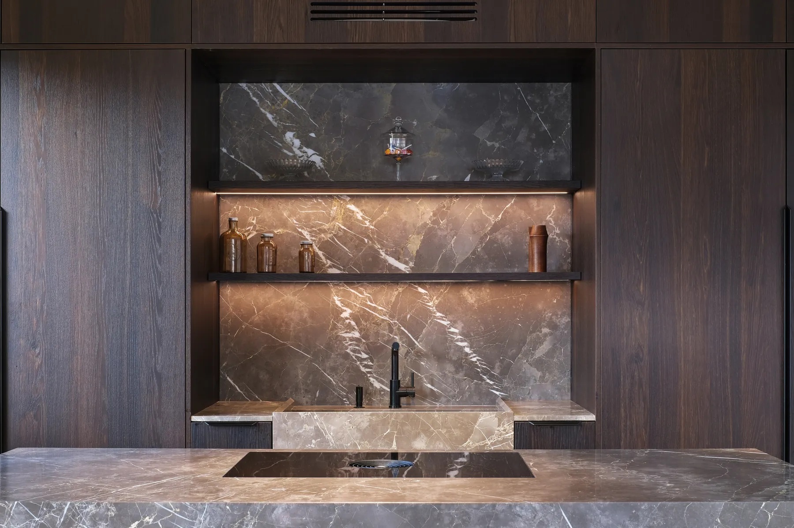
Mármore Fior di BoscoNicho iluminado revestido a mármore, lava-loiça integrado 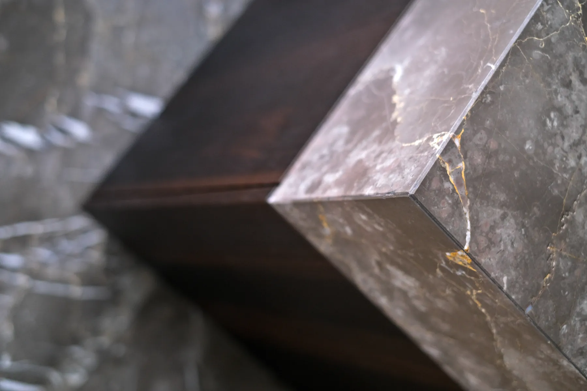
Mármore Fior di BoscoCanto em meia-esquadria, pormenor de acabamento 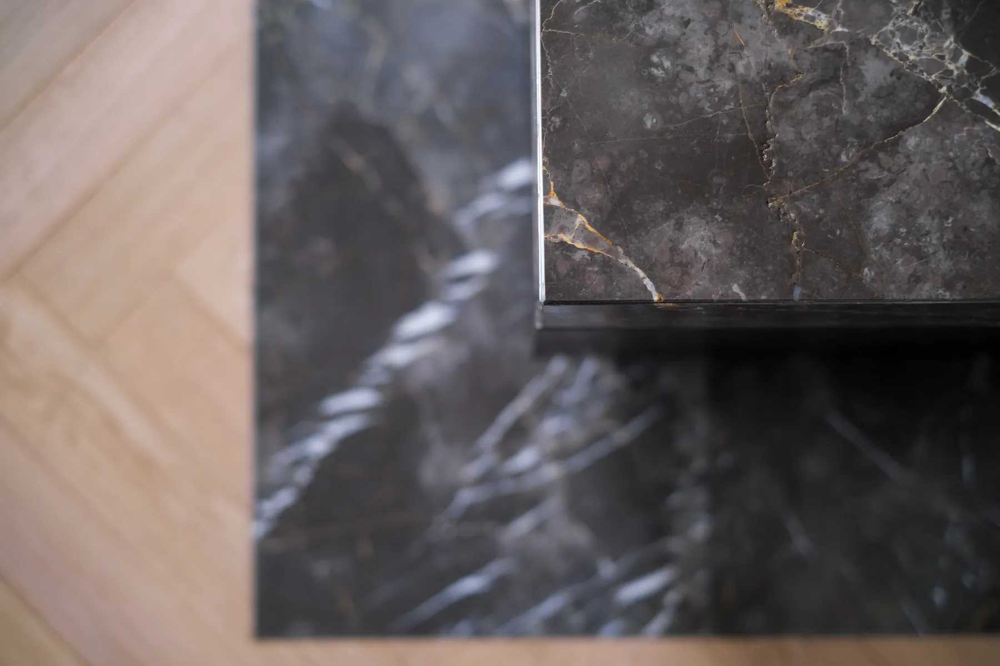
Mármore Fior di BoscoBordo polido e inserção de mármore no chão 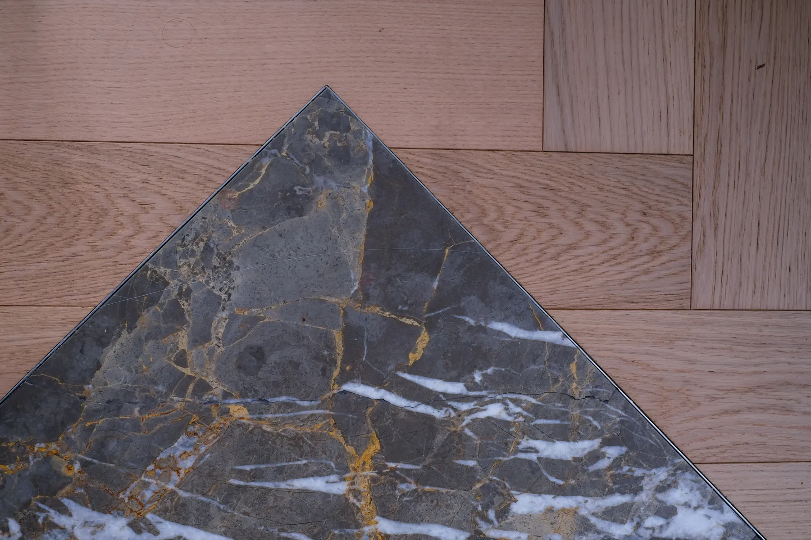
Mármore Fior di BoscoInserção de mármore em ponta no parquet 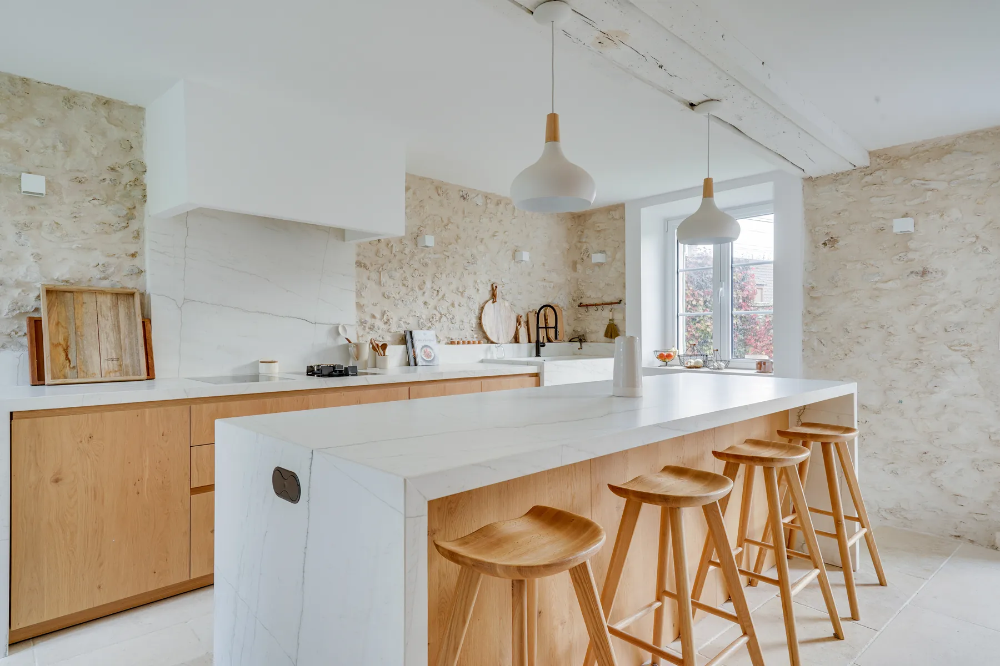
Bancada branca raiadaIlha com queda em cascata, frentes em carvalho 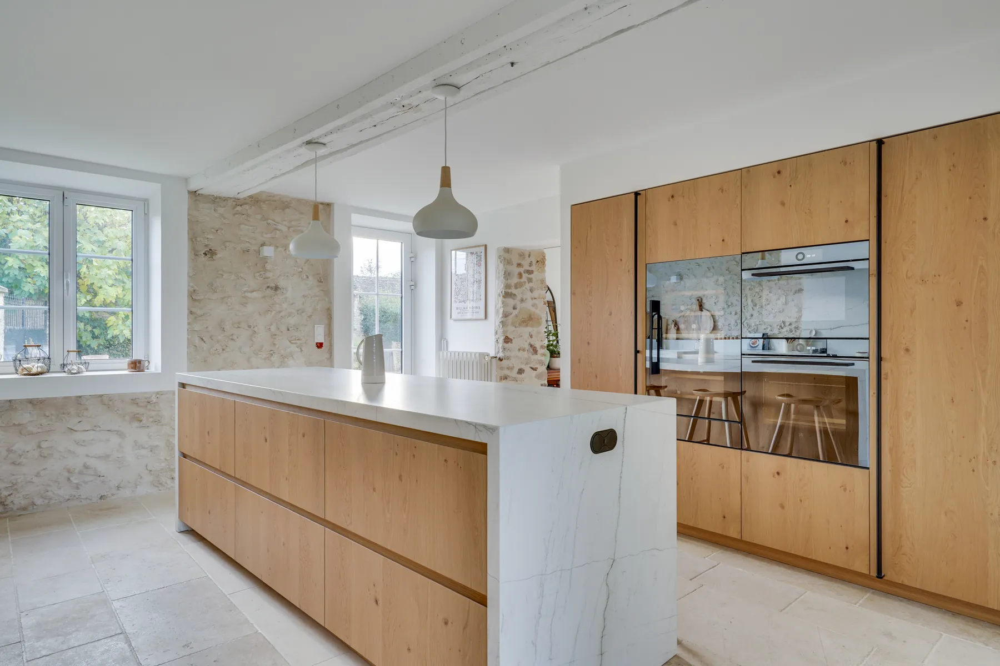
Bancada branca raiadaGrande cozinha aberta, ilha e colunas em carvalho 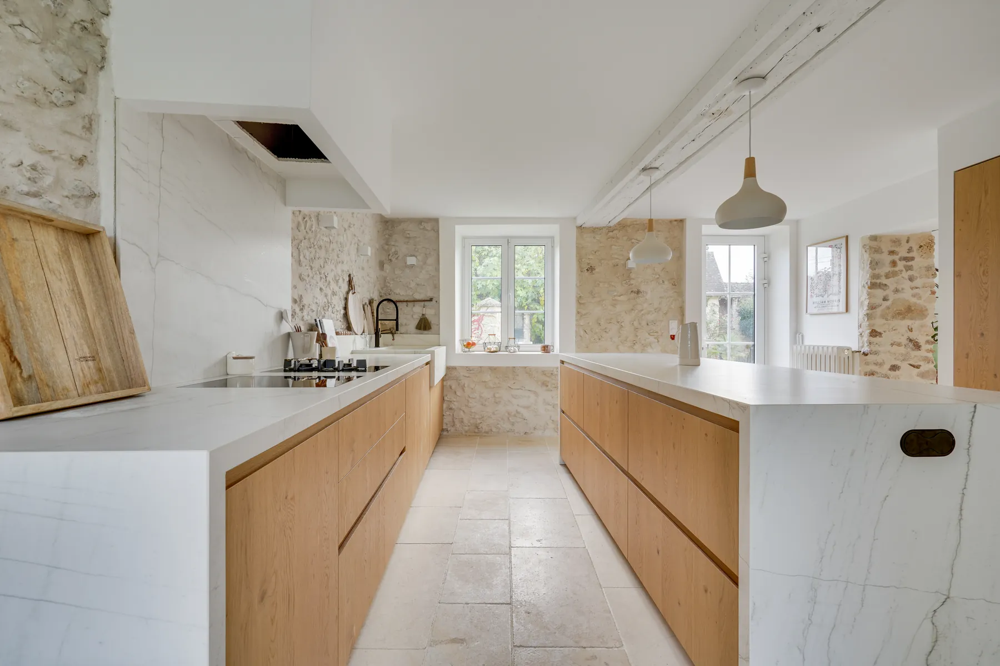
Bancada branca raiadaBancada e ilha frente a frente, bordos em retorno 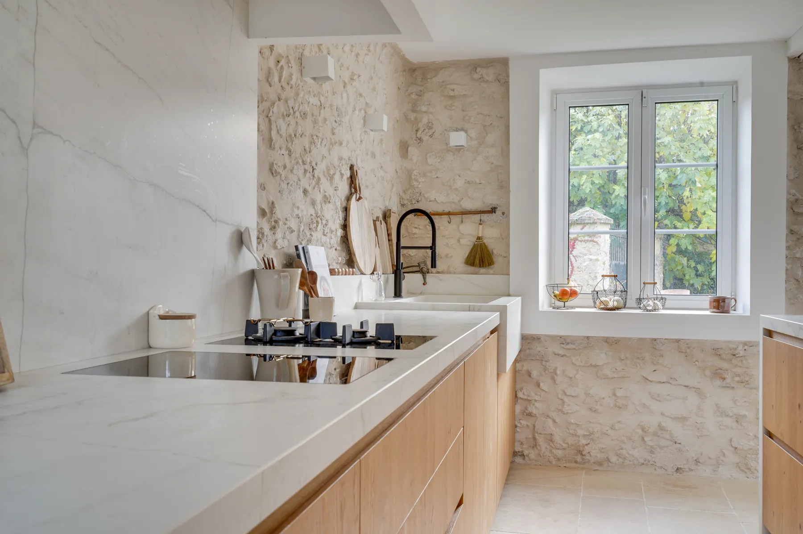
Bancada branca raiadaBancada branca raiada com placa integrada 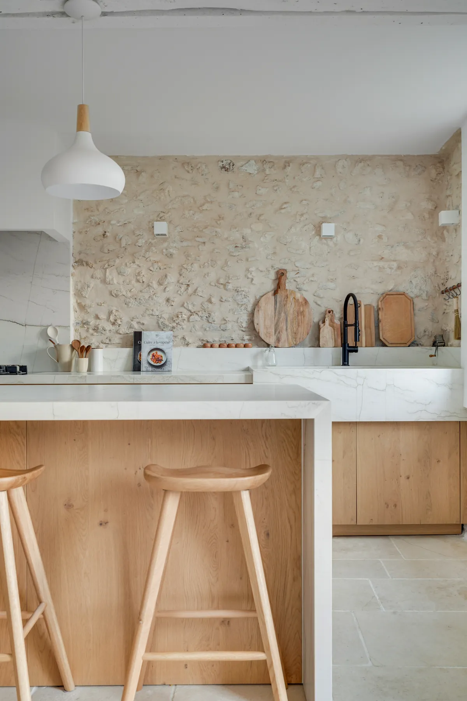
Bancada branca raiadaBancada em retorno na frente da ilha, parede em pedra 
Mármore Calacatta Vagli RosatoIlha de cantos arredondados prolongada em mesa, frente a condizer 
Quartzito Black TempestFrentes em madeira escura canelada, painel de parede preto com veios dourados 
Mármore Breccia SardaFrentes bege-areia e madeira escura, bancada creme 
Cerâmica ArabescatoMóveis baixos castanho-escuros, bancada branca 
Mármore Calacatta Vagli RosatoBancada e frente brancas, portas em madeira escura 
Quartzito Black TempestLava-loiça esculpido na pedra 
Mármore Breccia SardaBancada e frente em tom creme 
Cerâmica ArabescatoIlha com móveis baixos castanho-escuros 
Mármore Calacatta Vagli RosatoFrente em mármore sobre bancada branca 
Quartzito Black TempestCanto da bancada, frentes caneladas 
Mármore Breccia SardaIlha com frentes bege-areia e madeira escura 
Cerâmica ArabescatoVista geral, bancada branca
Casas de banho
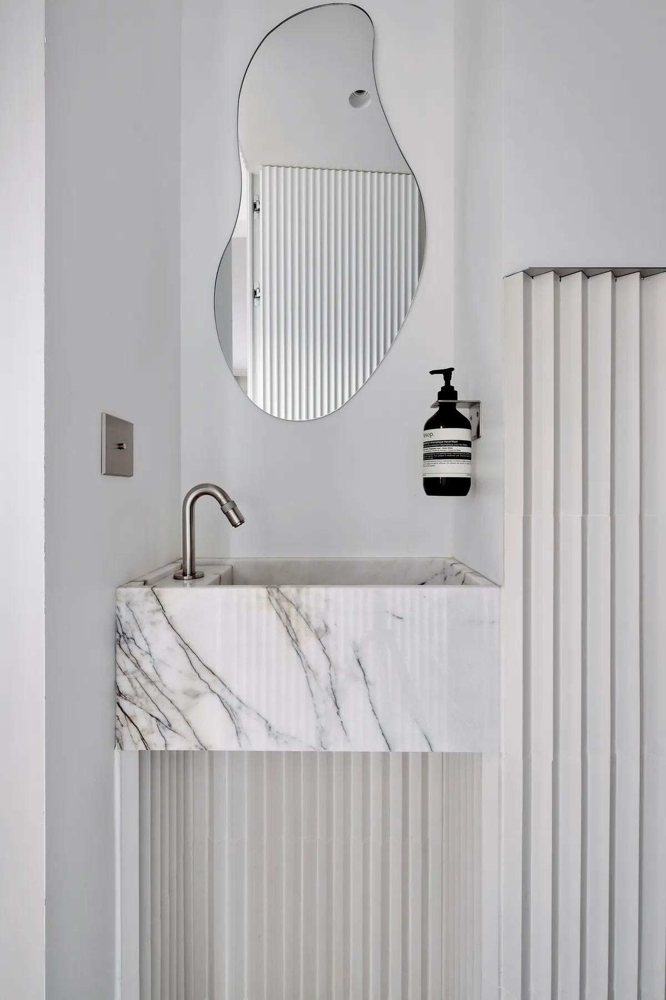
Mármore branco raiadoLavatório monobloco em mármore branco raiado 
Mármore CalacattaDuche revestido a mármore, paredes pretas 
Cerâmica Calacatta OroBancada de lavatório branca sobre móvel em madeira clara 
TravertinoBancada de lavatório duplo sobre móvel castanho-escuro 
Pedra naturalBancada de lavatório duplo sobre móvel em madeira clara 
Cerâmica Calacatta OroMóvel em madeira clara e bancada de lavatório branca 
TravertinoDuche revestido a travertino 
Pedra naturalCasa de banho com móvel em madeira clara, bancada bege 
Pedra naturalBancada de lavatório bege sobre móvel em madeira clara 
TravertinoPormenor do travertino, móvel castanho-escuro
Mesas

Mármore Ombra Di CaravaggioMesa de centro com base preta, numa sala de estar 
Mármore branco e pretoMesa oval bicolor sobre base em latão 
Mármore cinzentoMesa de jantar, pé em madeira canelada 
Mármore brancoMesa de apoio com pé em latão junto a um banco corrido 
Mármore brancoMesa de jantar, pé em madeira canelada 
Mármore Travertino ClassicoMesa por medida 
Mármore Ombra Di CaravaggioMesa de centro com tampo cinzento 
Mármore branco e pretoMesa oval bicolor 
Mármore cinzentoMesa de jantar em contexto
Bares e restaurantes

Mármore Bianco NieveBalcão de bar, revestimento branco canelado 
Mármore Fantasy GreenCozinha aberta de restaurante, revestimento em madeira 
Mármore Bianco NieveBar em frente a um painel retroiluminado preto e dourado 
Mármore Fantasy GreenBalcão de bar, revestimento em madeira 
Mármore Bianco NievePainel de parede e revestimento canelado 
Mármore Fantasy GreenBalcão em toda a sua extensão 
Pedra naturalBalcão de bar
Lareiras

MármoreRevestimento de lareira por medida
Escritórios

QuartzitoTampo de secretária por medida
As suas perguntas
Podem fabricar uma peça igual a um projeto da galeria?
Sim. A partir dos seus desenhos cotados, reproduzimos a forma, as espessuras, os rebordos e os recortes de um projeto. Numa pedra natural como o mármore ou o quartzito, porém, os veios nunca serão exatamente iguais, porque cada chapa é única. Indicamos-lhe as chapas disponíveis para se aproximar do aspeto, ou uma superfície técnica mais regular se a uniformidade for importante para o seu cliente.
Fabricam peças para bares, hotéis e restaurantes?
Sim. Balcões de bar, mesas de restaurante e bancadas de serviço fazem parte dos nossos projetos. Para um espaço aberto ao público, ajudamos a escolher um material adequado a um uso intensivo e a uma limpeza diária. Fabricamos a partir dos seus desenhos, controlamos cada peça e entregamos na morada indicada, ficando o trabalho em obra a cargo das suas equipas ou dos seus parceiros.
Envie-nos os seus desenhos
Desenhos cotados, ficheiros técnicos, material e acabamentos: analisamos o seu pedido e respondemos em 48 horas úteis.